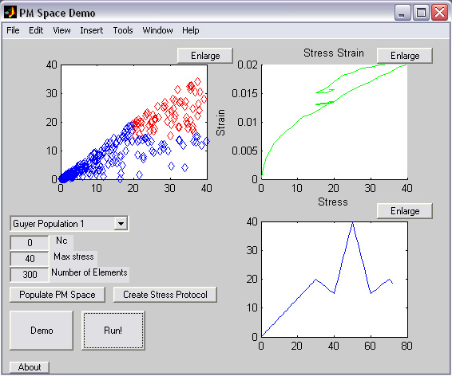

PM Space Simulator
Introduction
This program has expanded far beyond its initial aims. You can still find the PMDemo - a simple forward model of PMSpace for download here, however, a more complete PMPro version is available for download as well that uses a Monte Carlo method to invert PM space from a stress-strain curve.
Here's a comparision between the two versions
|
|
|
|
|
|
About
PMDemo was written to visualize and help explain the complex inner workings of PM space and the implications of the model, for me to use at the LANL Student Symposium 2006. I've also added in a discussion of PM space and how the code works, in the user's guide.
PMPro was written to expand on the capabilities of PMDemo and allow for one to get a feel for what kind of PM spaces simulate experimental data.
Download
PMDemo
PMDemo - A zip file with all the functions you will need. Run PMDemo from the Matlab command prompt.
Manual and discussion (PDF)
PMPro
MCR Installer - The MATLAB component runtime that must be installed before running the program installer.
PMPro_pkg - The installer for the standalone application
PMPro - A zip file with all the functions required. Run PMPro from the Matlab command prompt.
Installation
Download and run the MCRInstaller to install the Matlab Runtime only if you have not done this before. Then run the installer for the standalone application. This will create PMPro.exe which will run PMPro. Alternatively you can download and extract the .zip files to a folder and then run PMDemo or PMPro from the command line.
References
[1] Equation of state and wave propagation in hysteretic nonlinear elastic materials. McCall, K.R. and Guyer, R.A. Journal of Geophysical Research. (1994). Vol 99, no. B12. Pgs (23,877-23,897) (PDF)
[2] Quantitative implementation of Preisach-Mayergoyz space to find static and dynamic elastic moduli in rock. Guyer, R.A.,McCall, K.R., Boitnott, G.N., Hilbert, L.B., Plona, T.J. Journal of Geophysical Research. (1997). Vol 102, no. B3. Pgs (5,281-5,293) (PDF)
[3] A new theoretical paradigm to describe hysteresis, discrete memory and nonlinear elastic wave propagation in rock. Guyer, R.A. and McCall, K.R. Nonlinear Processes in Geophysics. (1996). Vol 5. Pgs (89-101) (PDF)
Screenshots
PMDemo

An image of the demo GUI in operation on a custom PM space model.
PMPro
A shot of the more flexible PMPro in action.